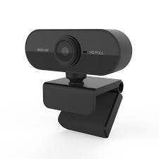
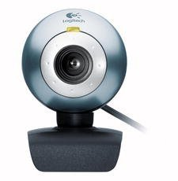

En el Departamento de Ciencias de la Computación de la Universidad de Cambridge, la máquina de café está en el sótano. Si una persona quiere café, tiene que bajarse de su escritorio, y si quiere, se sirve una taza. Si no es así, debían hacerlo manualmente. Las reglas establecen que quien termine la cafetera debe volver a llenarla, pero siempre hay quienes están dispuestos a desobedecer las reglas.
En 1993, Quentin Stafford-Fraser y Paul Garditzky, que compartían oficina, estaban cansados de bajar tres pisos y encontrar el café vacío, y decidieron lanzar un contraataque. Crearon un protocolo cliente-servidor que, al conectarlo a la cámara, transmite imágenes de la máquina de café con una resolución de 128 x 128 píxeles.
Entonces, desde las pantallas de sus computadoras, saben cuándo es el momento de bajar a tomar un café y, por casualidad, saben quién dejó la máquina de café y no la volvió a llenar. El protocolo se llama XCoffee y después de unos meses de depuración decidieron lanzarlo. En 1992, se vendió en el mercado la primera cámara web llamada XCam.
Una webcam es una pequeña cámara digital conectada a un ordenador que puede tomar fotografías y transmitirlas a sitios web u otros ordenadores de forma privada a través de Internet. La cámara web requiere de un ordenador para transferir imágenes. Sin embargo, existen otras cámaras independientes que solo requieren un punto de acceso a la red informática, Ethernet o inalámbrica. Ambos son aptos para tareas de seguridad y videovigilancia.
Aparte del uso diario, el uso de cámaras web de cierta calidad es común en varios campos de la investigación científica. Por ejemplo, en astronomía amateur, se pueden utilizar cámaras web de cierta calidad para grabar imágenes de satélites y estrellas distantes.
Características Generales
1º Característica
Las cámaras web están disponibles en varios tamaños y formas para satisfacer y atender a los consumidores.
2º Característica
El diseño de la cámara es muy específico para muchas aplicaciones como videoconferencia, videovigilancia y muchas más. Algunas cámaras, según el modelo, tienen lentes que se pueden girar hasta 360 grados, algunas se conectan a un monitor de computadora y otras vienen con trípodes o soportes ajustables y micrófonos integrados.
3º Característica
Generalmente, la definición estandar de baja resolucion de video (se refiere a la calidad de una grabación de video de cámara web) es aproximadamente 640 X 480 píxeles ya que requiere menos ancho de banda de internet y de los recursos del sistema. Los videos de alta definición de hasta 720p (1280 × 720 píxeles) y 1080p (1920 × 1080 píxeles) provee mejor calidad de video pero resultan lentos con las conexiones a Internet existentes.
4º Característica
Las cámaras web de baja calidad están limitadas a sensores de 1MP o 2MP, lo que les permite capturar imágenes de hasta 2048 x 1536 píxeles. Por otro lado, las mejores cámaras tienen capacidades fotográficas de 10MP, lo que significa que toman fotos con una resolución de hasta 3072 x 2304 píxeles.
5º Característica
La velocidad de Internet afectará por completo la calidad de grabación de la cámara web. Si tiene una cámara web lenta, de alta velocidad de fotogramas y alta definición no tendrá suficiente ancho de banda para transmitir correctamente a través de Internet.
6º Característica
Zoom o distancia focal fija. Hay dos tipos de lentes: lentes de distancia focal fija y lentes con zoom. Una lente de distancia focal fija tiene una distancia focal fija y una lente de zoom tiene una distancia focal variable.
Por otro lado, la ventaja de un objetivo zoom es su versatilidad. Es ideal para fotografiar una variedad de sujetos, como paisajes y retratos, y solo desea un objetivo para ambos. Por otro lado, las cámaras web con lentes de distancia focal fija también tienden a tener aperturas máximas más grandes (f / 1.4 af / 2.8). Esta es una ventaja cuando se dispara con poca luz.
Tipos de WebCams
Profesional

Este tipo de WebCams son muy costosas ya que cuentan con una mayor calidad de video y se suelen utilizar en los ámbitos profesionales como por ejemplo para hacer Stream para Twich o Youtube.
Amateur

Suelen ser de las más baratillas y las podemos encontrar por unos 50 euros, son muy útiles para la vida cotidiana, el trabajo diario...
¿Cómo funciona la WebCam?
El funcionamiento de la webcam es muy sencillo: la videocámara toma fotos, las transmite a un ordenador que las traduce a un lenguaje binario y las envía por Internet hasta que todo el que quiera verlas pueda acceder a ellas. Este proceso incluye 4 etapas:
1. La cámara toma imágenes y las envía a su computadora de forma regular, algunas se actualizan cada pocos segundos y otras cada pocas horas.
2. La computadora, utilizando hardware / software apropiado, traduce la imagen a un formato binario, generalmente un archivo de imagen jpeg, con una buena relación calidad / tamaño.
3. Las imágenes traducidas se incluirán en la dirección de Internet, lo que permitirá su visualización en línea, de modo que la última imagen esté siempre disponible. Entonces, cuando alguien solicita una página de cámara web, puede ver la imagen final tomada por esa página en su navegador.
4. Hay cámaras web con frecuencias de actualización muy altas que pueden dar la impresión de transmitir imágenes de video en vivo. Sin embargo, estas son las únicas ventanas que normalmente se actualizan cuando pasas el cursor sobre un enlace o haces clic en él.
¿Cómo se instala una Webcam?
Ahora vamos a explicar paso a paso el como podemos instalar una Webcam a nuestro ordenador:
1º Paso
Lo primero que debe hacer es conectar el cable USB de la cámara web a uno de los puertos USB rectos en la parte trasera o lateral del ordenador. ¡¡¡Cuidado!!! Asegúrete de que la cámara web esté conectada directamente a tu ordenador y no a un concentrador USB.
2º Paso
Luego inserte el CD que vino con la cámara en la unidad de CD de su ordenador. Si su cámara no tiene un CD, omita este paso.
3º Paso
Espere a que se abra la página de configuración de la cámara web. La página de configuración de la cámara web se abrirá automáticamente. Si la cámara no tiene un CD, la instalación generalmente comienza cuando la cámara web está conectada al ordenador.
4º Paso
Sigue las instrucciones en pantalla. Las instrucciones de las cámaras web varían según el modelo, pero para la mayoría de los procesos de configuración hay que hacer clic en una serie de ventanas de preferencia antes de hacer clic en el botón Instalar.
5º Paso
Cuando haya terminado de instalarse, se abrirá el programa correspondiente, que es cuando podrás empezar a configurar la cámara.
A modo de valoración final de mi trabajo recogiendo informacion y a la hora de elaborar esta simple página web, me gustaría recalcar lo poco que sé de las webcams. Antes de empezar a recopilar informacion para mi trabajo me preguntaba que tampoco habría mucha informacion sobre las webcams pero mientras encontraba la información me daba cuenta que en verdad es un dispositivo muy útil tanto en el ámbito profesional como en la vida cotidiana.
También quiero recalcar el como funciona la webcam congiendo "x" fotogramas y dependiendo del numero de fotogramas que pueda captar por segundos nuestra elección de webcam puede cambiar para que se nos ajuste a nuestros requerimientos, y que el software también influye en la calidad de la imagen cosa que yo no tenía en cuenta al principio.
Finalmente, este trabajo me ha gustado mucho ya que he conocido y me he informado mejor sobre mi periférico (Webcam). Ahora cuando necesite comprar una webcam para mi ordenador saber como instalarlo, elegir el modelo segun la utilizad que le quiera dar.
Ya como último te dejo abajo mi correo y un video de un youtuber que ha probado distintas webcams del mercado y para que veas las diferencias en la calidad de imagen entre ellas.